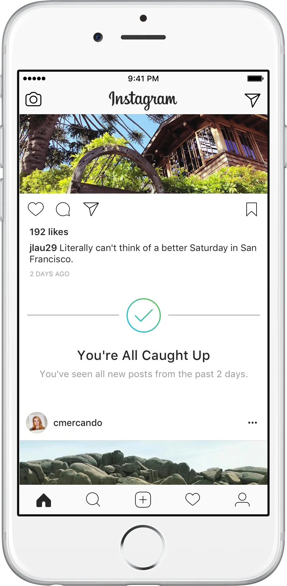
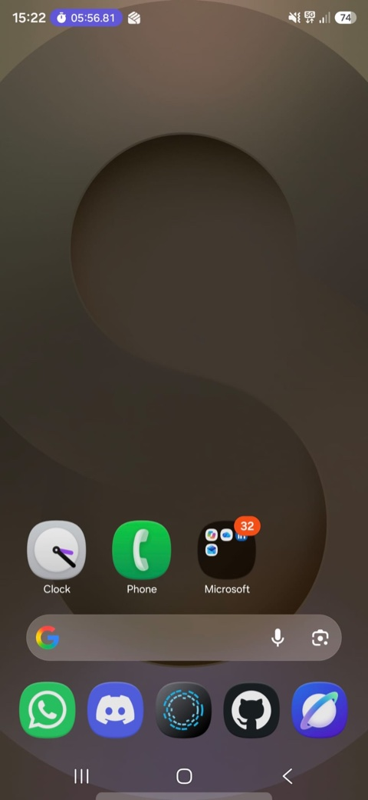
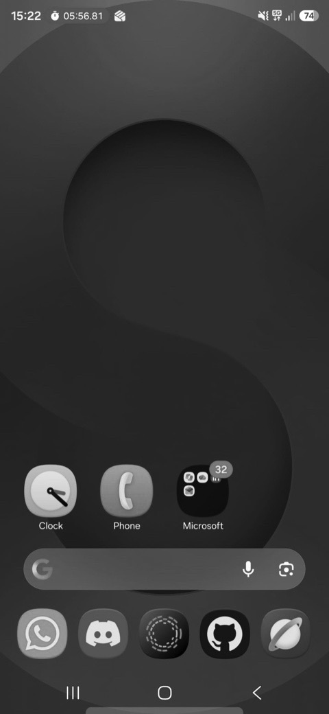

Tristan Harris at Google
Tristan Harris studied at Stanford, where he took a class with B. J. Fogg (see the persuasion page), and later worked at Google. In 2013 he wrote an internal presentation, "A Call to Minimize Distraction & Respect Users' Attention", that was seen by tens of thousands of Google employees. His message was that companies like Google, Apple and Facebook should "feel an enormous responsibility" [1].
Time Well Spent and the Center for Humane Technology
Harris introduced "Time Well Spent", an idea he co-created with James Williams and Joe Edelman, at TEDx Brussels in 2014. In December 2015 he left Google to work on it full time [1].
Time Well Spent (2015) became the Center for Humane Technology in 2018, a non-profit in San Francisco founded by Harris, Aza Raskin (see the mechanics page) and Randima Fernando. For CHT the root cause is the business model based on attention, which Harris calls "a race to the bottom of the brain stem". CHT works in three directions: awareness of manipulative design, policy, and better design, for example removing dark patterns [2]. Since 2023 it also works on the risks of AI [3].
Impact: TED and The Social Dilemma
Harris gave a TED talk in 2017, and in the following years Facebook, Instagram, YouTube and Google added tools to monitor time spent, such as Screen Time. In 2020 Netflix released "The Social Dilemma", a documentary by Jeff Orlowski in which Harris and other CHT members were interviewed. In the film he says: "Never before in history have fifty designers made decisions that would have an impact on two billion people." [1] It was watched by 38 million households in its first month [3].
The film was also criticised. Reviewers pointed to its dramatised scenes and its lack of nuance, and Facebook replied with a document called "What 'The Social Dilemma' Gets Wrong" [4]. In Slate, Pranav Malhotra argued that it treats technology as "the sole cause of harm" and ignores the activists and researchers, such as Safiya Noble, who had criticised social media long before the former tech insiders in the film [5].
Better design: Value Sensitive Design
Designers also have methods to do things differently. Value Sensitive Design, developed by Batya Friedman and Peter Kahn at the University of Washington, is "a theoretically grounded approach to the design of technology that accounts for human values in a principled and comprehensive manner".
It works in three kinds of investigation, repeated in cycles: conceptual (who are the stakeholders, which values matter, where they conflict), empirical (what real users value and need) and technical (how to design the system to support those values). Typical values are well-being, privacy, autonomy, fairness, trust and informed consent [6].
A well-known example is the Mozilla web browser, where researchers introduced informed consent tools: a concrete case of how privacy and user control can be woven into the development of software [6].
Better design: stopping cues

Some good practices are simple. In July 2018 Instagram added a message that says "You're All Caught Up" when you have seen all new posts from the past 2 days [7]. It is a stopping cue: exactly the natural moment to stop that infinite scroll had removed (see the mechanics page).
But the stopping cue did not last. In August 2020 Instagram added "Suggested Posts" right after the "You're All Caught Up" message: posts from accounts you do not follow, together with ads, so the feed goes on again [8]. The business model won over the good intention.
Better rules: an easy way out and no dark patterns
When good practices are not enough, they can become rules. One is an easy way out: leaving should be as easy as joining. In October 2024 the US Federal Trade Commission adopted a "click-to-cancel" rule with exactly this idea for subscriptions [9]. A court struck it down in 2025 for procedural reasons, and the FTC has started the process again [10].
In the European Union the rules go further and are already in force. Since February 2024 the Digital Services Act forbids online platforms to design their interfaces in a way that "deceives or manipulates the recipients of their service" or otherwise limits their ability to make free and informed decisions [11].
What users can do themselves
Users can take back some control too. CHT reminds us that "notifications, alerts, and badges are designed to draw your attention back to your phone", and suggests turning off notifications, using focus modes, removing apps and keeping some spaces phone-free. Another tip is to set the screen to grayscale [12].


In these two screenshots of the same home screen (screenshots: Tommaso Russo; grayscale version created for comparison), the red "32" badge on the Microsoft folder jumps out in colour, but in grayscale it almost disappears.
This is not just an impression. In a 2020 study, college students who switched their phones to grayscale for about ten days reduced their daily screen time by nearly 40 minutes, spending less time on social media and browsing [13].
CHT also has a toolkit for people aged 13 to 25, because "Everyone who uses social media deserves to know how it works." [14]
Conclusion
Each level has its limits. Instagram's stopping cue shows that good design can be undone when it conflicts with the business model, and personal tricks put the whole job on the user. This is why rules matter: they can change the incentives themselves, because, in Raskin's words, "incentives eat intentions" (see the mechanics page).
Sources
- Wikipedia, "Tristan Harris". en.wikipedia.org
- Center for Humane Technology, "Social Media in Society". humanetech.com
- Wikipedia, "Center for Humane Technology". en.wikipedia.org
- Wikipedia, "The Social Dilemma". en.wikipedia.org
- Pranav Malhotra, "Netflix's The Social Dilemma fails to tackle the real issues in tech", Slate, 18 September 2020. slate.com
- Wikipedia, "Value sensitive design". en.wikipedia.org
- Instagram, "Introducing 'You're All Caught Up' in Feed", 2 July 2018. about.instagram.com
- Sarah Perez, "Instagram finds new ad space at the end of your feed with launch of 'Suggested Posts' feature", TechCrunch, 19 August 2020. techcrunch.com
- US Federal Trade Commission, "Federal Trade Commission Announces Final 'Click-to-Cancel' Rule Making It Easier for Consumers to End Recurring Subscriptions and Memberships", 16 October 2024. ftc.gov
- Jones Day, "FTC Revives Click-to-Cancel Rule: New Risks for Subscription Businesses", May 2026. jonesday.com
- European Union, Regulation (EU) 2022/2065 (Digital Services Act), Article 25. eur-lex.europa.eu
- Center for Humane Technology, "Control Your Tech Use". humanetech.com
- A. J. Holte, F. R. Ferraro, "True colors: Grayscale setting reduces screen time in college students", The Social Science Journal, 2020. doi.org/10.1080/03623319.2020.1737461
- Center for Humane Technology, "Youth Toolkit". humanetech.com